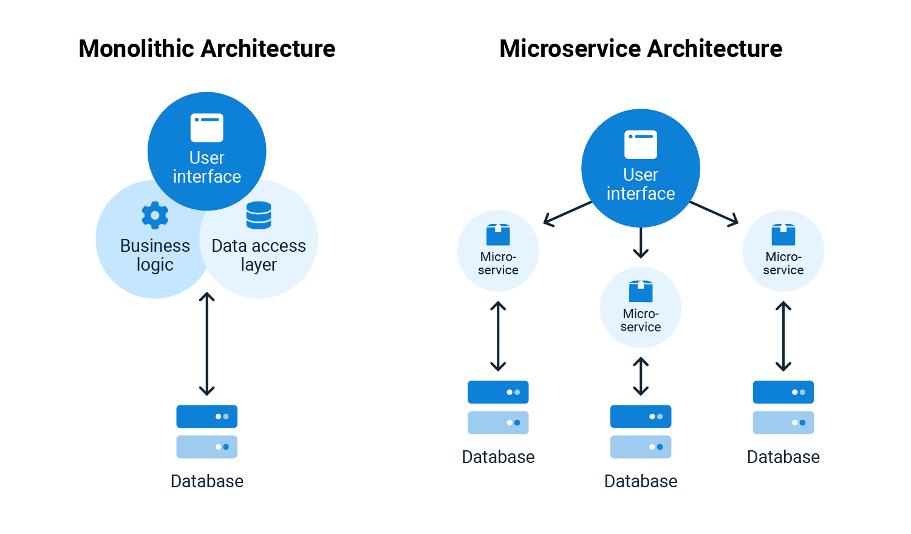
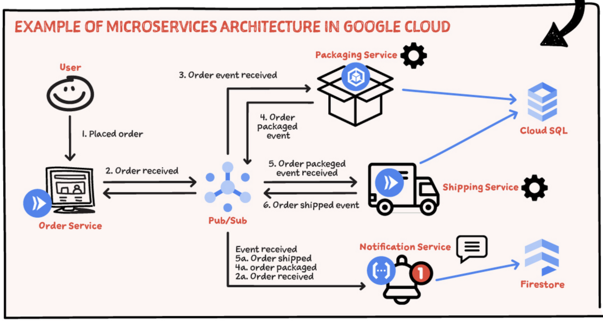

/
On this page
Microservices
In software engineering, a microservice architecture is an architectural pattern that organizes an application into a collection of loosely coupled, fine-grained services that communicate through lightweight protocols (kind of a specific implementation of a distributed system). This pattern is characterized by the ability to develop and deploy services independently, improving modularity, scalability, and adaptability. However, it introduces additional complexity, particularly in managing distributed systems and inter-service communication, making the initial implementation more challenging compared to a monolithic architecture.
Monolith vs Microservices

{kind=link}
With monolithic architectures, all processes are tightly coupled and run as a single service. This means that if one process of the application experiences a spike in demand, the entire architecture must be scaled. Adding or improving a monolithic application’s features becomes more complex as the code base grows. This complexity limits experimentation and makes it difficult to implement new ideas. Monolithic architectures add risk for application availability because many dependent and tightly coupled processes increase the impact of a single process failure.
With a microservices architecture, an application is built as independent components that run each application process as a service. These services communicate via a well-defined interface using lightweight APIs. Services are built for business capabilities and each service performs a single function. Because they are independently run, each service can be updated, deployed, and scaled to meet demand for specific functions of an application.

{kind=link}
Benefits of Microservices
- Improved scalability: Individual microservices can be scaled independently based on their specific needs
- Increased agility: Microservices can be developed, deployed, and updated independently, enabling faster release cycles
- Enhanced resilience: If one microservice fails, it doesn’t necessarily impact the entire application
- Technology diversity: The flexibility of microservices allows teams to use the most suitable technology for each service